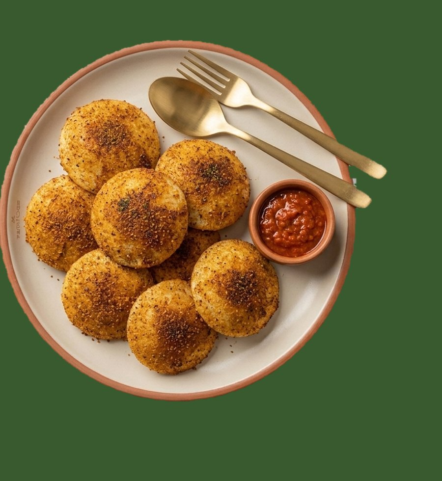
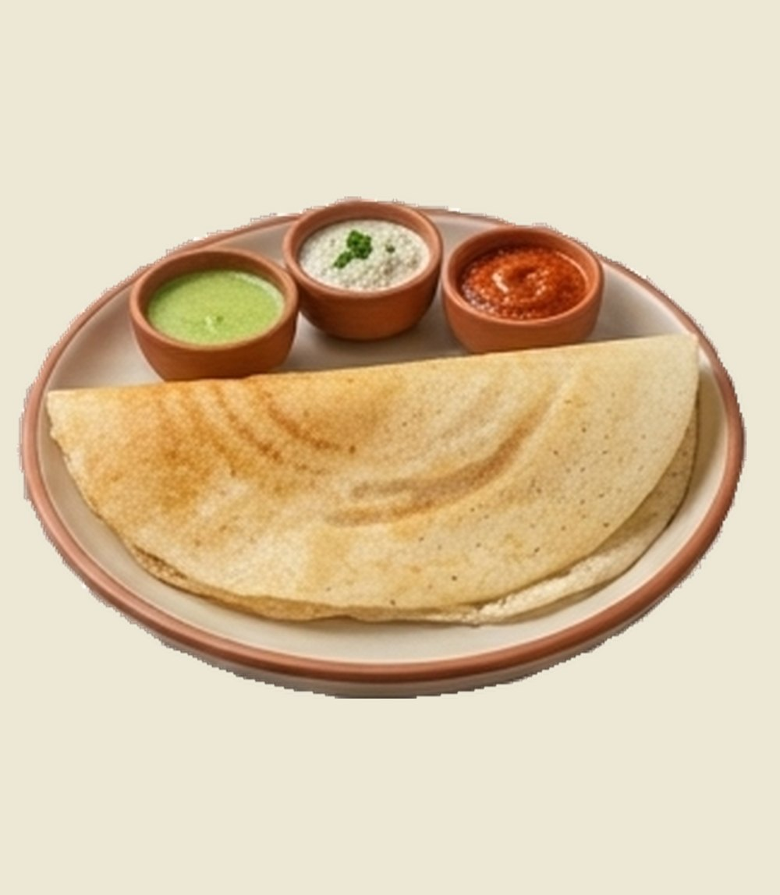
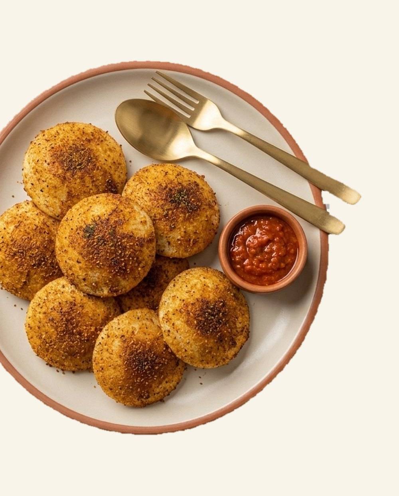
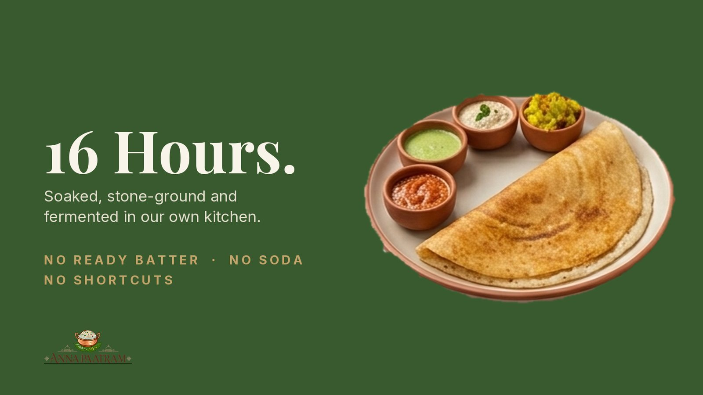
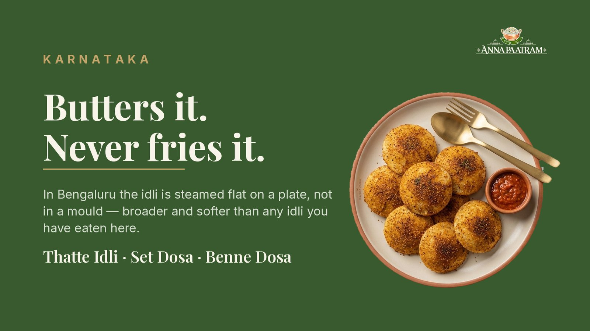
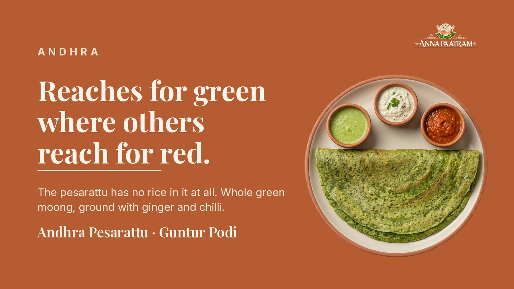
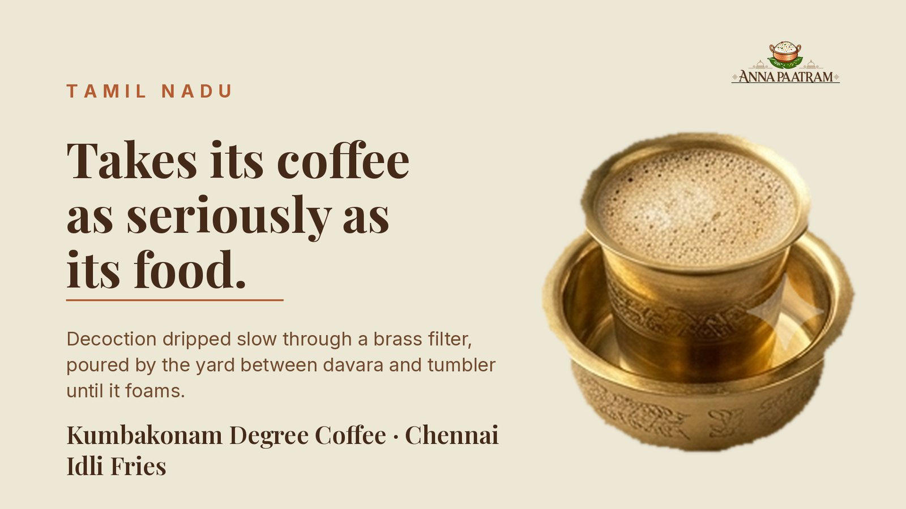
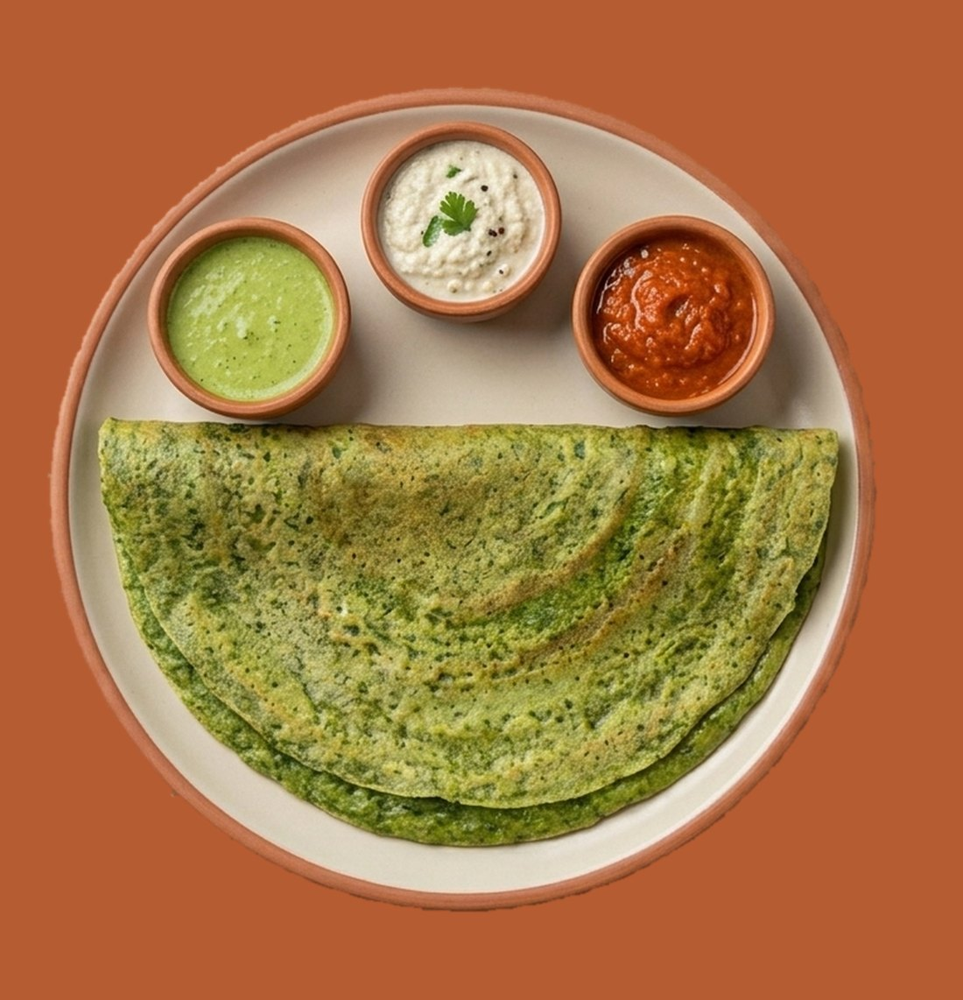
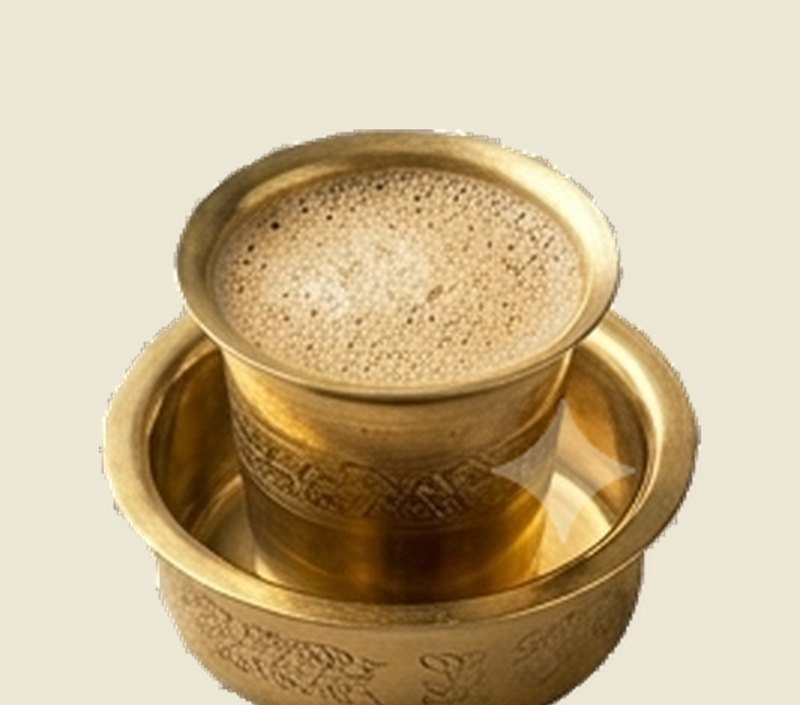
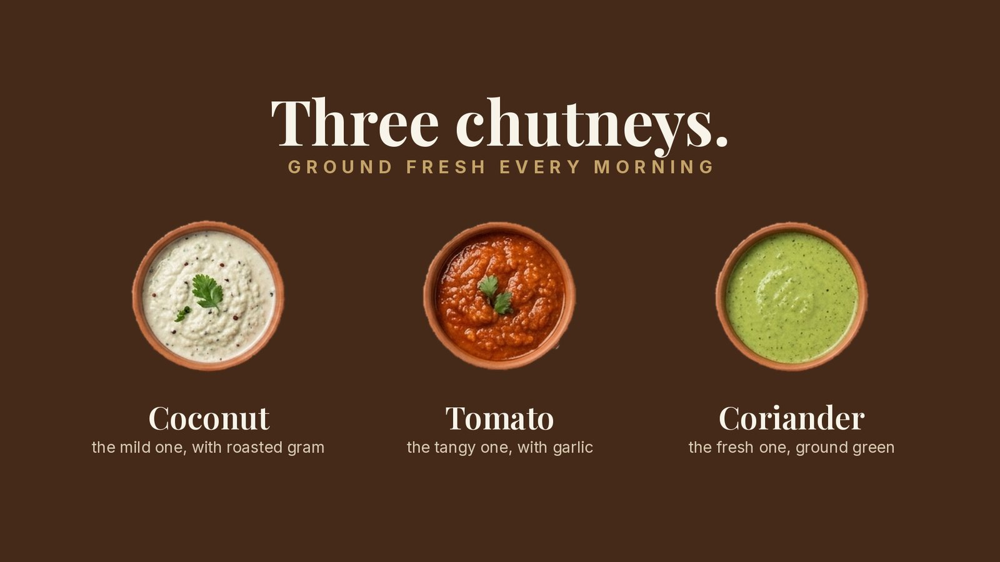

Karnataka
Bengaluru Thatte Idli
Steamed flat on a plate instead of a mould, so it comes out broader and softer. Ghee-kissed, dusted with podi.
100% pure vegetarian · Karnataka · Andhra · Tamil Nadu
We don't serve "South Indian food". We serve Karnataka, Andhra and Tamil Nadu, and we tell you which is which. Batter soaked, stone-ground and fermented for sixteen hours in our own kitchen. No ready batter. No soda.

Our story
An anna paatram is the vessel of rice: the one pot in a South Indian home that never sits empty. Family eats from it. A guest who arrives unannounced eats from it. It is filled again before anyone asks.
That is why our sambar comes back to the table without being asked. Toor dal simmered with tiffin-sambar masala roasted in-house, drumstick, shallots and a spoon of ghee. Three chutneys, always three: coconut, tomato and coriander, ground fresh every morning.


Karnataka · Andhra · Tamil Nadu
Karnataka grinds its batter one way and Andhra another. Mysore reaches for red chilli where Guntur reaches for green. A place name is a fact you can check, which is why we print it instead of claiming to be authentic.



Start here
From the regions, the classics, and the idlis we invented ourselves. The full menu runs to more than a hundred dishes.

Steamed flat on a plate instead of a mould, so it comes out broader and softer. Ghee-kissed, dusted with podi.

Ground from whole green moong with no rice in the batter at all. Rustic, protein-rich, unmistakably green.

Decoction dripped slow through a brass filter, poured by the yard between davara and tumbler. Never instant.
Crisp and golden on the sixteen-hour batter, with gently spiced potato masala and three chutneys.
Fourteen buttons, rolled warm in podi and ghee. Gunpowder, explained, one bite at a time.

Coconut, the mild one. Tomato, the tangy one. Coriander, the fresh one. Ground every morning, never four.
The Jumbo Dosa Challenge
Four feet of crackling dosa laid out on a banana leaf. Bring your family, bring your camera. Finish it between four of you and dessert is on us.
Catering, parties & group bookings
Kitty parties, birthdays, office lunches, family functions and outdoor catering. Live dosa counters, idli and vada stations, filter coffee, and the rice meal on banana leaf.
Tell us the date, the headcount and where. We come back with a menu and a price for your event, usually the same day.
Visit us
More Anna Paatram kitchens are opening across Punjab. Follow us on Instagram to hear first.
Feedback
Every note reaches the people who run the kitchen. Tell us what you loved, and what we should fix.
Careers
We hire South Indian chefs, kitchen helpers, counter and service staff, and managers. Send your details and CV; we call back if there is a fit.
Good to know
Yes, 100% pure vegetarian. Jain preparations are available on request; just tell the counter.
The batter. Rice and urad dal, soaked, stone-ground and fermented for sixteen hours in our own kitchen. No ready batter, no soda.
Gunpowder: lentils, dried chillies, sesame and curry leaves, roasted and pounded. It is served dry alongside, eaten with ghee. It is not a chutney.
Each lace is ladled thin and set slowly on the tawa. Allow us 15–20 minutes; it is worth it.
Yes: kitty parties, birthdays, office lunches, functions and outdoor catering. Use the catering form or WhatsApp us.
Yes. We are signing franchise partners for food-court counters and casual dining. See formats and numbers.